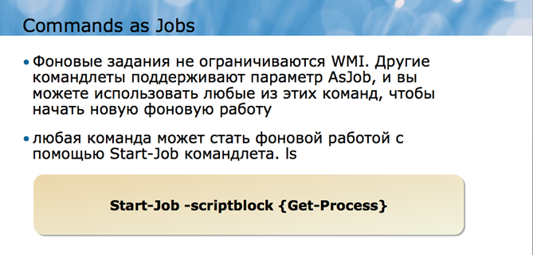
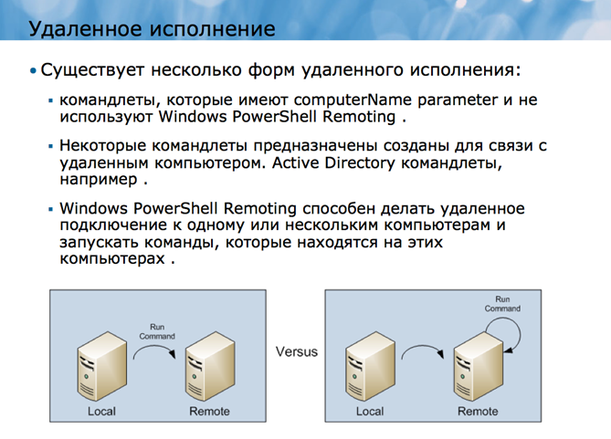
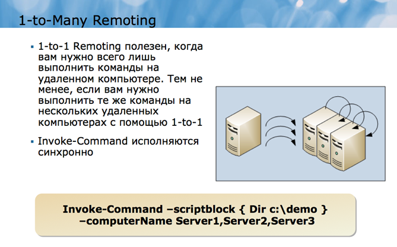
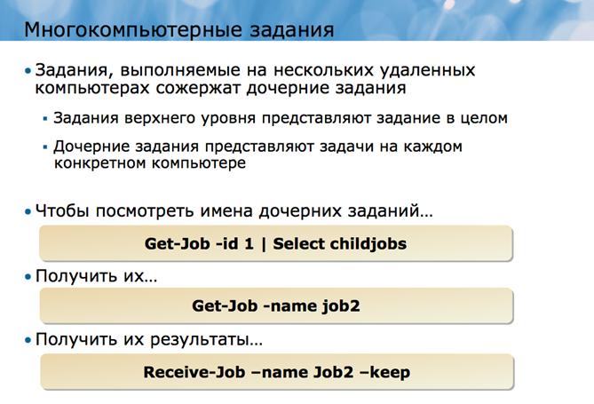

Фоновые задания и задания удаленного типа
Фоновые задания и задания удаленного типа являются двумя ключевыми чертами, представленными Windows PowerShell ® v2.0. Каждая из этих черт придает более высокий уровень зрелости Windows PowerShell, помогая вам выполнять более сложные задачи и позволяя расширять административные достижения.
При выполнении некоторых длительных команд в оболочке, вы можете предпочесть, чтобы они происходили в фоновом режиме, так что вы могли бы продолжать использовать оболочку для других задач.
Одним из способов достижения этой цели могло бы быть простое открытие второго окна оболочки, но это связано с использованием немного большего объема памяти и процессорного времени на вашем компьютере, и дает вам еще одно окно в управлении. Другим вариантом является выполнение команд в качестве фонового задания.
Как правило, команды Windows PowerShell завершаются в интерактивном режиме, или синхронно. Если вы выполняете длительный команду, вы должны ждать его завершения перед запуском других команд в оболочке.
Фоновые задания просто перемещает обработку команд в фоновом режиме. Команда продолжает выполнить, но вы можете начать использовать оболочку для других задач. Windows PowerShell предоставляет командлеты для проверки состояния фонового задания.
Когда команда работает в фоновом режиме, ее результаты сохраняются в памяти как часть работы объекта. Вы можете получить результаты выполненных работ и работать с ними в канале.
Get-WmiObject является командой, которая часто занимает много времени для запуска, особенно, когда вы извлекаете информацию из нескольких удаленных компьютеров. Командлет поддерживает -AsJob параметр, который проходит в качестве команды фонового задания Вы можете использовать Get-WmiObject в точности так, как вы это обычно делаете, просто указывать -AsJob в качестве дополнительного параметра для создания фоновых заданий:
Get-WmiObject –computer (gc names.txt) –class CIM_DataFile –AsJob.
Вместо того, чтобы ждать завершения WMI, команда будет немедленно размещать объект работы в конвейер и начинать выполнение работы в фоновом режиме.
После того, как задание запущено, вы можете контролировать ее ход, удалять полную работу, или получать результаты завершенной работы.
Оболочка предоставляет несколько командлетов:
• Get-Job будет получать все доступные задания. Укажите идентификатор или имя-параметра для получения конкретного задания.
Передайте эти командные данные Get-Member или Format-List *, чтобы увидеть свойства задания.
• Remove-Job удаляет работу. Укажите id или укажите параметр для удаления задания в этом командлете.
• Wait-Job сделает паузу и дождется работы, чтобы закончить. Укажите id или назвате параметра, чтобы указать, какое задание в этот командлете стоит ждать для выполнения.
Этот командлет может быть полезным в сценариях, когда необходимо выполнение скрипта, чтобы приостановить, пока данное фоновое задание будет завершено.
• Stop-Job будет останавливать выполнение задания, в том числе задания, которые зависли и не будут завершены самостоятельно.
Укажите либо id или назовите параметр, чтобы указать, какое задание должно быть остановлено в этом командлете.
Когда работа завершена, выводы ее команды будут сохраняться в памяти как часть рабочего объекта. Вы можете использовать Receive-Job для получения этих результатов с кэш-памяти.
Receive-Job помещает объекты в конвейер. Предположим, вы начинаете работу с помощью следующей команды:
Get-WmiObject Win32_Service -comp Server2 -AsJob
И в результате работы выглядит следующим образом:
Id Name State HasMoreData.
2 Job2 Completed True
Тогда вы сможете получать результаты в конвейер, фильтровать их и сортировать их, а именно:
Receive-Job –id 2 | Sort State | Where { $_.State –ne "Stopped" }
Вы также можете присвоить результаты Receive-Job переменной:
$results = Receive-Job –id 2
Обратите внимание, что в предыдущем примере на самом деле довольно плохая практика. Он запрашивает от WMI больше информации, чем это действительно необходимо, а затем фильтрует эту информацию локально. Лучшей техникой является:
Gwmi Win2_Service –comp Server2 –filter "State <> 'Stopped'" –asjob
Этот пример выполняет фильтрацию на источнике, следуя лучшей практике левого фильтра, имея в виду размещение критериев фильтрации так далеко влево от командной строки, как это возможно.
Когда вы получаете итог работы, оболочка удаляет итог из кэш-памяти задания. Это означает, что вы можете использовать Receive-Job один раз для любой работы, а после этого нельзя будет получить никакие другие результаты.
Указывая параметр сохранения, однако, вы можете поручить оболочке оттавить результаты в кэше задания используя параметр -keep.
Receive-Job –id 4 –keep
Еще один способ сохранить результаты выполнения задания, это экспортировать их в XML-файл:
Receive-Job –id 7 | Export-CliXML jobresults.xml
Вы можете затем использовать Import-CliXML, чтобы повторно импортировать результаты работы в оболочке.
Оболочка сохраняет информацию о in-prosess и завершенных работах, даже после того, как вы получили результаты этой работы.
Вы можете очистить список заданий, удалив задания, которые были завершены. Отметим, что таким образом устраняют любые кэшированные выводы, вы не сможете получить результаты выполнения задания после удаления работы.
Укажите задание либо по ID:
Remove-Job -id 1
Либо по названию:
Remove-Job –name Job1
Или в конвейере камендлета:
Get-Job | Where { $_.Name –like "AD*" } | Remove-Job
Другие команды как фоновые задания
Фоновые задания не ограничиваются WMI. Другие командлеты поддерживают параметр AsJob, и вы можете использовать любые из этих команд, чтобы начать новую фоновую работу.

Кроме того, любая команда может стать фоновой работой с помощью Start-Job командлета. Просто предоставьте блок сценария (то есть, одну или несколько команд). Можно дополнительно предоставить альтернативные учетные данные для работы. Start-Job всегда начинает работу, поэтому нет AsJob параметров. Однако есть параметр Name, который позволяет указать имя задания. Это имя будет использоваться вместо автоматически генерируемого имени задания, такого как job1 или Job2. Указывая собственное название задания легче сослаться на это задание с помощью параметра -Name командлетов, таких как Get-Job, Wait-Job, Remove-Job, Receive-Job, и Stop-Job.
Вы также можете заметить, что Invoke-Command имеет -AsJob параметр. Тем не менее, не используйте это, чтобы начать местную работу, так как он предназначен для того, чтобы начать фоновые задачи, общаться с удаленными компьютерами.
Этот командлет будет рассмотрен далее.
В то время как Windows PowerShell командлеты, такие как Get-WmiObject или Get-Service уже реализуют свои возможности удаленного подключения, Windows PowerShell также предоставляет свои особенности удаленного взаимодействия, которые позволяют практически любую команду или сценарий запускать на одном или нескольких удаленных компьютерах. Эти функции помогают расширить административный доступ, охватив любой компьютер сети под управлением Windows PowerShell v2, и они позволяют вам управлять несколькими компьютерами с помощью одной команды.
Вход в консоль сервера либо физически, либо с помощью Remote Desktop connection не является хорошей практикой управления. Иногда это неизбежно, но так как сервер генерирует и поддерживает графическую среды пользователя, например, рабочий стол и приложения, которые работают на нем, то использование серверного диска, процессора и памяти является неэффективным.
Microsoft постепенно добавлены возможности удаленного управления для многих административных инструментов и консолей, которые администраторы используют наиболее, в том числе Active Directory Users and Computers, Server Manager и так далее. Тем не менее, это, как правило, графические инструменты, то есть просты в использовании, но они не могут быть легко автоматизированы.
С дистанционнымы возможностями Windows PowerShell в управлении, вы можете запустить почти любую ОС Windows PowerShell команду и получить ее выполнение на одном или нескольких удаленных компьютерах. Эта возможность позволяет управлять удаленными компьютерами более легко и с меньшими затратами, чем консольной сессией или соединением Remote Desktop.
Типы удаленного администрирования

Термин удаленное администрирование означает много разных вещей в Windows PowerShell.
• За исключением некоторых специфических команд вы узнаете на этом уроке, командлеты, которые имеют computerName parameter и не используют Windows PowerShell Remoting. Такие командлеты, как Get-WmiObject или Get-Service, реализуют собственное удаленное подключение. Get-WmiObject, например, использует Remote Procedure Call (RPC) протокол, присущий технологии WMI.
• Некоторые командлеты предназначены созданы для связи с удаленным компьютером. Active Directory командлеты, например, знают, как подключиться к контроллеру домена, чтобы выполнить их работу. Microsoft Exchange Server командлеты знают, как подключиться к компьютеру Exchange Server, даже если командлеты будут работать на Windows ® 7 клиентском компьютере. Эти команды используют коммуникационные протоколы, связанные с их конкретными технологиями и не используют Windows PowerShell Remoting.
• Windows PowerShell Remoting, о котором вы узнаете в этом уроке, способен делать удаленное подключение к одному или нескольким компьютерам и запускать команды, которые находятся на этих компьютерах. Windows PowerShell Remoting может быть использован с любым командлетом, который установлен на удаленных компьютерах и не полагается на командлеты, имеющие computerName parameter или любые другие возможности удаленного подключения.
Вы часто можете комбинировать эти три способа. Например, предположим, что вы хотите получить WMI информацию с удаленного компьютера, вы можете использовать любой из этих методов:
• Используйте Get-WmiObject и его -computerName параметр. Командлет запускается на вашем локальном компьютере, и использует RPC, для подключения к службе WMI на удаленном компьютере. Удаленный сервис обрабатывает запрос WMI и возвращает результаты в компьютер.
• Использование Windows PowerShell Remoting чтобы установить HTTP соединение с удаленным компьютером. Используя эту связь, укажите на удаленном компьютере запустить Get-WmiObject. Командлет запускается на удаленном компьютере и сообщается с WMI для выполнения запроса. WMI результаты передаются обратно на компьютер по HTTP-соединению.
Вы можете видеть, что есть некоторые тонкие различия между методами. Другой протокол используется для сообщений, которые могут повлиять на вашу способность работать через брандмауэры. Обработка происходит в различных местах для каждой ситуации. Во втором примере, большая часть обработки происходит на удаленном компьютере, в то время как в первом, нагрузка делится между двумя компьютерами.
Идея состоит в том, что различные формы удаленного администрирования имеют применение в различных сценариях. Ни одна из форм не лучше по своей сути, чем другая, хотя в определенных ситуациях, например, когда вам нужно распространять обработку или когда вам нужно общаться через брандмауэр, одна из форм удаленного администрирования может быть более подходящей.
Целью Windows PowerShell Remoting является подключение к одному или нескольким удаленным компьютерам, для запуска команд на этих компьютерах, и доведение результатов обратно на компьютер. Это позволяет одному администратору управлять компьютерами в сети с клиентского компьютера без физической необходимости посещать каждый компьютер. Основной целью Remoting Windows PowerShell является обеспечение пакета управления, который позволяет выполнять команды на весь набор удаленных компьютеров одновременно, в то время как старые технологии, такие как удаленный рабочий стол не позволяют это сделать.
Windows PowerShell Remoting (или просто Remoting для краткости) не использует те же технологии соединения и протоколы как более старые дистанционных методы введения, такие как Remote Desktop, и Remoting, как правило, меньше весит, что означает, что способ требует меньше накладных расходов, чем некоторые из тех технологий, которые старше. Это не означает, что эти старые технологии не полезны и не имеют места быть. Это означает лишь то, что Remoting может быть более эффективным и действенным в некоторых сценариях способом.
Существуют три основных способа использования Remoting:
• 1-to-1 Remoting: В этом случае, вы подключаетесь к одному удаленному компьютеру и запускаете команды оболочки на нем, точно так, как если бы вы зашли в консоль и открыли Windows PowerShell окно.
• 1-to-Many Remoting, или Fan-Out Remoting: В этом случае, вы даете команду, которая будет выполнена на одном или нескольких удаленных компьютерах одновременно. Вы не работаете с каждым удаленным компьютером интерактивно, а, скорее, ваши команды выдаются и выполняются в пакетном режиме, и результаты возвращаются на компьютер для вашего пользования.
• Many-to-1 Remoting или Fan-In Remoting: Этот сценарий предполагает, что несколько администраторов осуществляют удаленное подключение к одному компьютеру. Как правило, эти администраторы будут иметь различные разрешения на удаленном компьютере и могут работать в ограниченном пространстве внутри оболочки. Этот сценарий обычно требует разработки пользовательских ограниченной пространства и далее в этом курсе рассматриваться не будет.
Remoting нуждается в том, чтобы Windows PowerShell v2, наряду с поддержкой таких технологий, как Windows, Remote Management (WinRM) и. NET Framework v2.0 или выше, могла быть установлена как на вашем компьютере и на любом удаленном компьютере, к которому требуется подключиться. В целях безопасности Remoting должны быть включены, прежде чем вы начнете пользование. Вы узнаете, как включить Remoting позже в этом уроке.
Вместо того, чтобы использовать старые протоколы, такие как RPC для общения , Remoting использует Windows Remote Management или WinRM. WinRM представляет собой реализацию Microsoft веб-служб для управления, или WS-MAN, набор протоколов, которые получили широкое распространение в различных операционных системах. Как следует из названия, WS-MAN—and WinRM использует протоколы на базе Web. Преимущество этих протоколов в том, что они используют один определенный порт, что дает им возможность легче проходить через брандмауэры, чем старые протоколы, которые редко выбирали порт.
WinRM сообщается через Hypertext Transport Protocol, или HTTP. Обратите внимание, что версия WinRM включена и используется Windows PowerShell v2 не по стандартными портами HTTP 80 или 443. По умолчанию, текущая версия (v2.0) из WinRM использует TCP порт 5985 для входящих незашифрованных соединений. Этот порт назначения настраивается, хотя и рекомендуется оставить его значения по умолчанию, так как Windows PowerShell Remoting в связанных командлетах учитывает тот же порт по умолчанию.
Примечание: Старые версии WinRM использовали TCP порт 80 (или 443 для зашифрованного соединения) по умолчанию. Это не верно с WinRM v2. Тем не менее, WinRM v2 может быть поручено работать в режиме совместимости, где он также прислушивается к портам 80 и / или 443 для поддержки старых приложений, которые знаю только как отправить WinRM запросы к этим портам. Мы не будем рассматривать эту конфигурацию в этом курсе.
WinRM может использовать Transport Layer Security (TLS, иногда неточно называется SSL) для шифрования данных, передаваемых по сети. Отдельные приложения, которые используют WinRM, такие как Windows, PowerShell, могут также применять свои собственные методы шифрования данных, которые передаются в службу WinRM.
WinRM поддерживает аутентификацию и, по умолчанию, использует собственный протокол Kerberos Active Directory в среде домена. Kerberos не передает учетные данные по сети и поддерживает взаимную аутентификацию чтобы убедиться, что вы действительно подключаетесь к удаленному компьютеру, который вы указали.
В целях безопасности, WinRM по умолчанию отключен и должен быть включен. Он может быть включен локально на одном компьютере или он может быть включен и настроен с помощью объекта групповой политики (GPO).
WinRM запускается как сервис. Когда эта функция включена, и необходимые порты брандмауэра открыты, WinRM служба прислушивается к входящим запросам WinRM на назначенный порт. Когда запрос получен, WinRM рассматривает запрос, чтобы определить приложения, для которого и делался запрос.
Заявки должны регистрироваться в конечном итоге с WinRM. Регистрация сообщает WinRM, что приложение доступно и способно обрабатывать входящие запросы WinRM. Эта регистрация является тем, что позволяет WinRM найти применение при входящем получении запроса для этого приложения.
Когда входящий запрос получен, WinRM передает запрос назначенному приложению.
Приложение делает то, что оно должен делать, а затем передает любые результаты обратно в WinRM. WinRM передает эти результаты обратно на компьютер и приложение, которое послало первоначальный запрос WinRM.
Windows PowerShell , по умолчанию, не регистрирует себя в качестве конечной точки, опять же, для безопасности. Вы должны разрешить оболочке зарегистрировать себя в качестве конечной точки с WinRM. Это может быть выполнено локально на одном компьютере или с помощью в Group Policy в области домена. Вы должны также убедиться, что все необходимые конфигурации брандмауэра были изменены, чтобы разрешить WinRM трафик.
Вам нужно всего лишь включить WinRM, зарегистрироваться в конечной точки и изменить настройки брандмауэра на компьютерах, которые получат WinRM запросы. Любой компьютер с установленным Windows PowerShell v2 может отправить WinRM запросы.
Есть два способа настройки Windows PowerShell и WinRM. Первый и, возможно, самый простой, заключается в запуске Enable-PSRemoting командлета.
Примечание: Избегайте запуска Set-WSManQuickConfig. Этот командлет настраивает часть Remoting, но далеко не все. На самом деле, Enable-PSRemoting запускает Set-WSManQuickConfig внутренне, а затем выполняет другие действия, необходимые для регистрации Windows PowerShell, как WinRM конечной точки.
Вы должны войти в систему как администратор (и, если контроль учетных записей включен, необходимо запустить оболочку от имени администратора) для успешного запуска Enable-PSRemoting командлета:
• Включить WinRM.
• Начать WinRM обслуживание.
• Установить WinRM автоматический запуск службы.
• Изменить конфигурацию брандмауэра Windows, чтобы разрешить входящие соединения WinRM.
• Зарегистрировать обе 64 - и 32-разрядные версии Windows PowerShell, как WinRM конечные точки.
• Так как оказываемый уровень влияния высок, то вам будет предложено подтвердить свой выбор, чтобы командлет мог быть запущен.
1-to-1 shell позволяет быстро получить удаленную командную строку, похожую на SSH или Telnet в операционной системе Unix. 1-to-1 оболочка также похожа по функциям на то, как работает PSExec.
После того как вы открыли 1-to-1 удаленное соединение оболочки, вы можете эффективно использовать удаленно компьютерные Windows PowerShell сессии, как если бы вы физически, сидя перед компьютером, открыли Windows PowerShell окно.
Используйте Enter-PSSession для установления удаленного соединения оболочки. Эта команда принимает-параметр сomputerName, который принимает имя или IP-адрес компьютера, к которому вы хотите подключиться. Другие параметры позволяют указать альтернативные порты TCP, указать альтернативные учетные данные пользователя, и так далее. Прочитайте помощь для командлета, чтобы узнать об этих и других возможностях и особенностях.
После того, как удаленная оболочка стала активной, ваши строки Windows PowerShell будут изменяться, отражая имя компьютера, то, что вы подключены к, а также текущий путь:
PS C:\> enter-pssession -comp server-r2
[server-r2]: PS C:\Users\Administrator\Documents>
Когда вы закончите использование удаленного подключения, запустите Exit-PSSession, чтобы вернуться к местной командной строке:
[server-r2]: PS C:\Users\Administrator\Documents> exit-pssession
PS C:\>
При создании удаленного соединения оболочки, помните, что профиль скриптов не выполняется, даже если сценарий профиля существует.
При использовании удаленного соединения оболочки, у вас есть только доступ к командам, которые установлены на удаленном компьютере и тем, которые вы загрузили в оболочку с помощью Add-PSSnapin или Import-Module. Доступные команды на удаленном компьютере могут отличаться от имеющихся на локальном компьютере.
Будьте осторожны: когда вы находитесь в работе с удаленной оболочкой, каждая команда запуска будет выполняться удаленным компьютером. Примите во внимание эту последовательность команд:
Enter-PSSession –computerName Server1
Enter-PSSession –computerName Server2
Enter-PSSession –computerName Server3
Первая команда устанавливает соединение с компьютера на Server1. Вторая происходит в течение этой сессии, то есть вы подключаетесь с Server1 к Server2. Третья команда, осуществляется внутри сессии, то есть вы подключаетесь с Server2 на Server3. Старайтесь не делать этого, так как каждая сессия включает в себя определенный объем памяти, обработки, сетевые накладные расходы. Вместо этого, выйдите из сессии до создания новой:
Enter-PSSession –computerName Server1
Exit-PSSession
Enter-PSSession –computerName Server2
Exit-PSSession
Enter-PSSession –computerName Server3
Exit-PSSession
Эта последовательность гарантирует, что каждое подключение к Server1, Server2, и Server3 будет с вашего компьютера.
1-to-1 Remoting полезен, когда вам нужно всего лишь выполнить команды на удаленном компьютере. Тем не менее, если вам нужно выполнить те же команды на нескольких удаленных компьютерах с помощью 1-to-1 Remoting это будет неэффективно. Необходимо ввести сессию на первый компьютер, запустить команду, а затем выйти. Тогда вы введите второй сессии, выполните команду, и выйдете. Вам придется повторить этот процесс для каждого удаленного компьютера, и он займет слишком много времени.

1-to-Many Remoting позволяет представить команду, несколько команд, или даже целый сценарий с удаленных компьютеров. Команды передаются на удаленный компьютер с помощью WinRM. Каждый компьютер выполняет команды самостоятельно и возвращает результат, опять же с помощью WinRM, на ваш компьютер.
По умолчанию, оболочка не будет пытаться связаться с более чем 32 компьютерами одновременно. Если вы укажете более 32 компьютеров, то она будет работать с первыми 32, и потом, когда эти команды будут завершены, оболочка свяжется с дополнительными компьютерами. Эта функция называется дросселированием, и вы можете изменить дроссельный уровень с помощью дроссельных параметров.
Использование 1-to-Many Remoting осуществляется с помощью Invoke-Command командлета. Командлет принимает либо блок сценария или путь к файлу сценария и может принимать одно или несколько имен компьютеров:
Invoke-Command –scriptblock { Dir c:\demo }
–computerName 'Server1','Server2'
Дополнительные параметры Invoke-Command дают возможность указать альтернативный порт TCP, указать, что шифрование будет используется, указать альтернативные учетные данные, и так далее. Просмотрите помощь для команды, чтобы узнать больше.
Обратите внимание, что Invoke-Command обычно работает синхронно, то есть вы должны ждать, пока оболочка закончит работу со всеми удаленными компьютерами перед запуском дополнительных команд. Оболочка отображает результаты, как они приходят с удаленных компьютеров. Указывая-AsJob параметр, Invoke-Command может работать асинхронно, как фоновое задание..
Параметр –computerName Invoke-Command связывает ByPropertyName канальные входные данные, то есть любой ввод объектов, которые имеют свойство ComputerName, будет иметь значения этого свойства, соотносящиеся с параметром computerName.
Если вы запросите компьютеры из Active Directory, вы заметите, что они имеют свойство Name:
Import-Module ActiveDirectory
Get-ADComputer –filter *
Вы можете использовать Select-Object для создания пользовательского объекта, который имеет ComputerName, а затем отправить эти объекты в Invoke-Command:
Get-ADComputer –filter * |
Select @{Label='ComputerName';Expression={$_.Name}} |
Get-Service –name *
Эта команда вернет список всех сервисов со всех компьютеров в AD
Имейте в виду, что Windows PowerShell командлеты возвращают объекты, как их выводы. К сожалению, объекты программного обеспечения не могут быть переданы по сети. Вместо этого, WinRM сериализирует объекты в XML-формате, так как XML это просто текст, и текст может быть передан по сети довольно легко. Объекты принимаются на компьютере, а затем десериализируются обратно в объекты. Такое преобразование в и из XML отражается на том, как вы можете использовать объекты.
Рассмотрим, например, вывод этой команды:
PS C:\> get-service | get-member
TypeName: System.ServiceProcess.ServiceController
Name MemberType Definition
---- ---------- ----------
Name AliasProperty Name = ServiceN
RequiredServices AliasProperty RequiredService
Disposed Event System.EventHan
Close Method System.Void Clo
Continue Method System.Void Con
CreateObjRef Method System.Runtime.
Dispose Method System.Void Dis
Equals Method bool Equals(Sys
ExecuteCommand Method System.Void Exe
GetHashCode Method int GetHashCode
GetLifetimeService Method System.Object G
GetType Method type GetType()
InitializeLifetimeService Method System.Object I
Pause Method System.Void Pau
Refresh Method System.Void Ref
Start Method System.Void Sta
Stop Method ystem.Void Sto
WaitForStatus Method System.Void Wai
CanPauseAndContinue Property System.Boolean
CanShutdown Property System.Boolean
CanStop Property System.Boolean
Container Property System.Componen
DependentServices Property System.ServiceP
DisplayName Property System.String D
MachineName Property System.String M
ServiceHandle Property System.Runtime.
ServiceName Property System.String S
ServicesDependedOn Property System.ServiceP
ServiceType Property System.ServiceP
Site Property System.Componen
Status Property System.ServiceP
Это объект нормального обслуживания. Сравните его с объектом службы, который вернулся из Invoke-Command:
PS C:\> invoke-command -script { get-service } -computer server-r2 | get-member
TypeName: Deserialized.System.ServiceProcess.ServiceController
Name MemberType Definition
---- ---------- ----------
ToString Method string ToString(), st
Name NoteProperty System.String Name=AD
PSComputerName NoteProperty System.String PSCompu
PSShowComputerName NoteProperty System.Boolean PSShow
RequiredServices NoteProperty Deserialized.System.S
RunspaceId NoteProperty System.Guid RunspaceI
CanPauseAndContinue Property System.Boolean {get;s
CanShutdown Property System.Boolean {get;s
CanStop Property System.Boolean {get;s
Container Property {get;set;}
DependentServices Property Deserialized.System.S
DisplayName Property System.String {get;se
MachineName Property System.String {get;se
ServiceHandle Property System.String {get;se
ServiceName Property System.String {get;se
ServicesDependedOn Property Deserialized.System.S
ServiceType Property System.String {get;se
Site Property {get;set;}
Вы можете видеть, что типовое имя теперь указывает, что это объекты десериализации. Кроме того, объективные методы больше не доступны (за исключением встроенных ToString методов, которые прилагается ко всем объектам), и только свойства объектов выжили в преобразовании в и из XML. Эти объекты больше не являются прикрепленными к реальным, функционирующим частям программного обеспечения. Вместо этого, они по сути являются текстовыми снимками, или этих объектов.
Отметим также, что несколько дополнительных свойств были присоединены к объектам PsComputerName, например, которые содержат имя компьютера, с которого пришел каждый объект. Когда вы получаете результаты с нескольких компьютеров, это дополнительное свойство может позволить вам сортировать и группировать объекты в зависимости от компьютера, с которого они пришли. Например:
Invoke-Command –script { Get-Service } –computer Server1,Server2 |
Sort PSComputerName | Format-Table –groupby PSComputerName
Если вы используете the –AsJob параметр Invoke-Command, то каждый компьютер получит свою группу работ:
Invoke-Command –script { Get-Process } –computer Svr1,Svr2 –asjob
Создаются три задания: верхнего уровня, работа для Invoke-Command , а потом дочерняя работа каждая для SVR1 и SVR2.
Результаты каждого компьютера, хранятся в соответствующем дочернем задании. Вы можете получить результаты от каждого по отдельности или вы можете получить все результаты, от верхнего уровня заданий.

При использовании Invoke-Command и его-AsJob параметрjd, вы создаете верхний уровень работы:
PS C:\> invoke-command -script { get-service }
-computer server-r2,localhost -asjob
Id Name State
1 Job1 Running
Вы можете проверить статус этого высшего уровня работы, запустив Get-Job, и после того, как работа завершена, вы можете получить я результаты всех компьютеров с помощью Receive-Job:
Receive-Job –id 1 –keep
Однако, это также можно увидеть в имена дочерних заданий, которые были созданы:
get-job -id 1 | select childjobs
ChildJobs
---------
{Job2, Job3}
После того, как вы узнали имена дочерних названий, вы можете взять их по одному:
PS C:\> get-job -name job2
Id Name State
2 Job2 Completed
Вы также можете получить результаты каждого задания индивидуально по желанию:
Receive-Job –name Job2 –keep
Invoke-Command командлет также имеет -JobName параметр, который позволяет указать пользовательское имя для работы, а не с использованием автоматически сгенерированных имен, как Job2.
В качестве лучшей практики, попытайтесь сделать все ваши обработки на удаленном компьютере. Результаты, которые вы получите от Invoke-Command должно быть в окончательном виде, который вам нужен, также вы можете отформатировать их, экспортировать их в файл, или направить их на различные устройства вывода на локальный компьютер.
Например, следует избегать ситуаций, когда извлекаете все службы с удаленного компьютера, а затем выполняете сортировку и фильтрацию на месте:
Invoke-Command –script { Get-Service } –computer Server1 |
Where { $_.Status –eq "Running"} |
Sort Name |
Export-CSV c:\services.csv
Вместо этого, сделайте так много работы на удаленном компьютере, как это возможно:
Invoke-Command –script {
Get-Service |
Where { $_.Status –eq "Running" } |
Sort Name
} | Export-CSV c:\services.csv
При подаче команды на несколько компьютеров, каждый компьютер должен выполнять поставленные перед ним задачи на высшем уровне.
Ранее вы узнали о концепции ограниченных пространств выполнения, которая распространяется на сценарии Many-to-1 Remoting.
Ограниченное пространство выполнения, как правило, создано разработчиком программного обеспечения и развернуто на сервере, который запускает Windows PowerShell. Цель ограниченного пространство выполнения заключается в том, чтобы дать удаленным администраторам ограниченные административные возможности на этом сервере.
Например, в среде Exchange Server, вы можете поделить место на Exchange Server Computer с другими клиентами. Возможность использовать Windows PowerShell Remoting для управления частями Exchange configuration , такие как почтовые ящики пользователей, полезна, но хостинговая компания может ограничить вас в изменениях конфигурации частей других клиентов на сервере.
Ограниченное пространство выполнения предоставляет такую возможность.
Ограниченное пространство выполнения может добавить новые командлеты, удалить командлеты, добавлять, удалять или изменять параметры и так далее. Тут самое главное понимать, что некоторые командлеты могут вести себя не так, как вы привыкли.
Итак, вы указали информацию о соединении как для 1-to-1, так и для 1-to-Many Remoting. То есть, когда работает или Invoke-Command или Enter-PSSession, вы должны предоставить имена компьютеров и, возможно, номера портов, альтернативные учетные данные, параметры проверки подлинности, и так далее. Если делать это повторяемо, то это может привести к ошибкам, поэтому Windows PowerShell предлагает способ для вас, чтобы создавать и повторно использовать соединение. Оболочка предоставляет эту возможность через PSSession.
Вы создаете новое, постоянное соединение с помощью New-PSSession командлета. Его параметры аналогичны для Enter-PSSession и Invoke-Command: Вы указываете имена компьютеров, учетные данные, порты и так далее. Результатом является постоянный объектом сессии, который может быть сохранен в переменной для дальнейшего использования.
Сессионные объекты могут быть переданы и Invoke-Command и Enter-PSSession, хотя Enter-PSSession принимает только один объект сессии, например:
$sessions = New-PSSession –computer Svr1,Svr2,Svr3
Invoke-Command –script { Get-Service } –session $sessions
Эта команда выполнит Get-Service на всех трех компьютерах. Или:
$sessions = New-PSSession –computer Svr1,Svr2,Svr3
Enter-PSSession –session $sessions[1]
Это позволит ввести 1-to-1 Remoting session на Svr2.
Всегда используйте Start-Job, чтобы начать работу местных фоновых работ-никогда не используйте Invoke-Command и его -AsJob параметр. Start-Job гарантирует, что работа создана локально, и что WinRM не используется.
Если вы используете Invoke-Command, чтобы начать локальное задание, знайте, что вы используете локальную петлю. То есть, WinRM выходит в сеть, а затем общается сам с собой по сети. Это может создать сложные ситуации для безопасности. Например, эта команда:
Invoke-Command –script { Get-EventLog Security } –comp localhost
на самом деле включает в себя коммуникационную сеть, и может поставить некоторые ограничения на то, что в состоянии сделать представленные команды.
Сессии требуют некоторой памяти, процессора и сетевых накладных расходов, поэтому вы не должны оставлять их открытыми без надобности. Используйте Remove-PSSession для закрытия сессий и используйте Get-PSSession для получения сессий, которые в настоящее время открыты.
Закрытие всех сессий, которые у вас хранятся в переменной, легко осуществимо при использовании этой команды:
$sessions | Remove-PSSession
Вы можете легко создавать и поддерживать несколько наборов сессий в различных переменных. Чтобы закрыть все открытые сессии, используйте следующую команду:
Get-PSSession | Remove-PSSession
Последнее приложение Remoting называется неявной implicit remoting. Идея состоит в том, чтобы признать, что различные компьютеры в среде содержат разные команды. Например, контроллер домена может содержат модуль ActiveDirectory. Этот модуль не будет работать на компьютере-клиенте Windows XP, хотя Windows XP может иметь Windows PowerShell v2. Предположим, у вас Windows XP на клиентском компьютере и вы хотите использовать командлеты в модуле ActiveDirectory.
Основные этапы implicit remoting таковы:
1. Используйте New-PSSession для установления сеанса с компьютера Windows XP на контроллер домена, который содержит модуль ActiveDirectory.
2. Вызовите команду на контроллере домена для загрузки модуля ActiveDirectory.
3. Используйте Import-PSSession для импорта удаленных команд на компьютере Windows XP. Укажите, что только команды, чьи имена начинаются с AD должны быть экспортированы, убедившись, что только Active Directory командлеты включены в экспорте.
Этот процесс не устанавливает модуль ActiveDirectory на Windows XP компьютер, этот модуль не может работать на Windows XP. Для использования Active Directory командлетов, вам нужно запускать их удаленно. Вы можете выполнять удаленные команд, указав нормальное имя командлетов.
Конечно, implicit remoting работает в любом сценарии, в котором вы хотите использовать командлеты, установленные на другом Компьютере - вы не ограничены в модуле ActiveDirectory или в Windows XP, хотя это хороший
Пример того, как implicit remoting может быть полезен.
Обратите внимание, что implicit remoting доступны только в то время как оригинальная сессия активна. Если закрыть оболочку или эту сессию, вы потеряете удаленные командлеты.